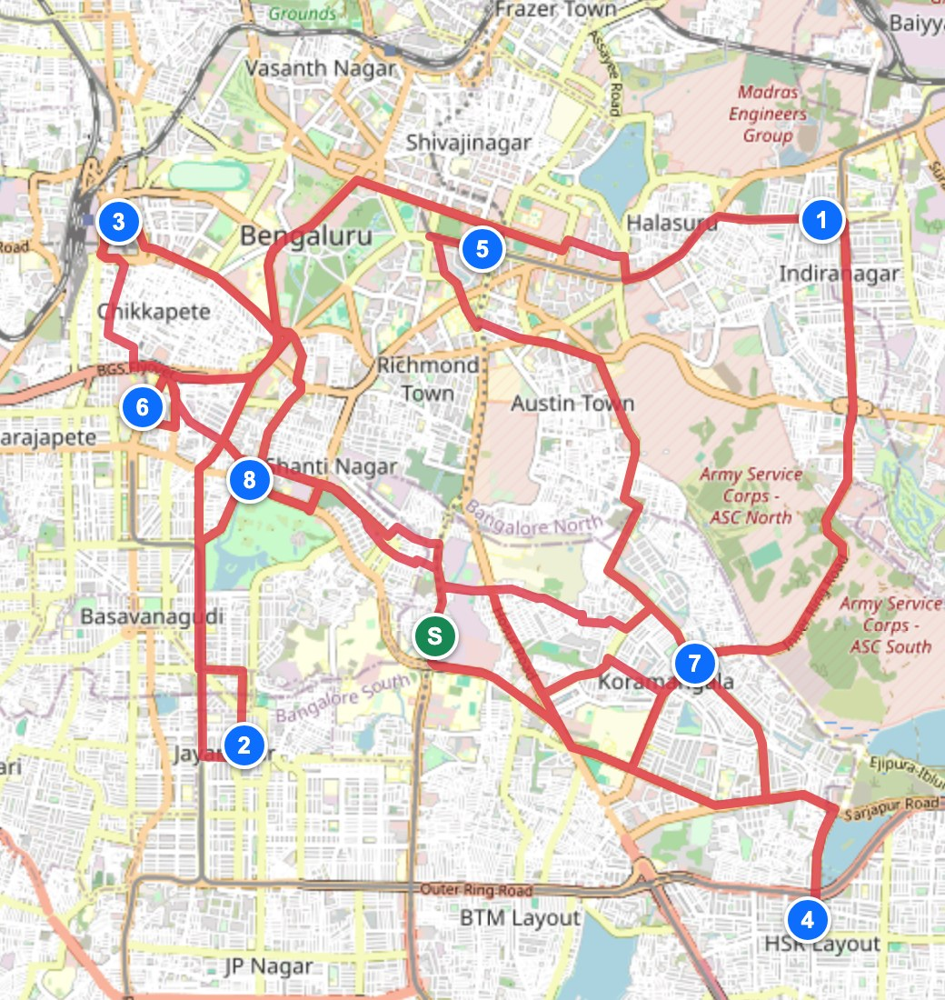
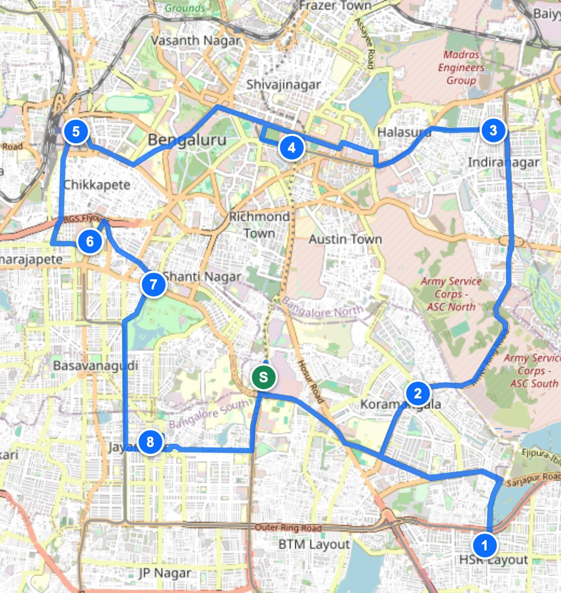
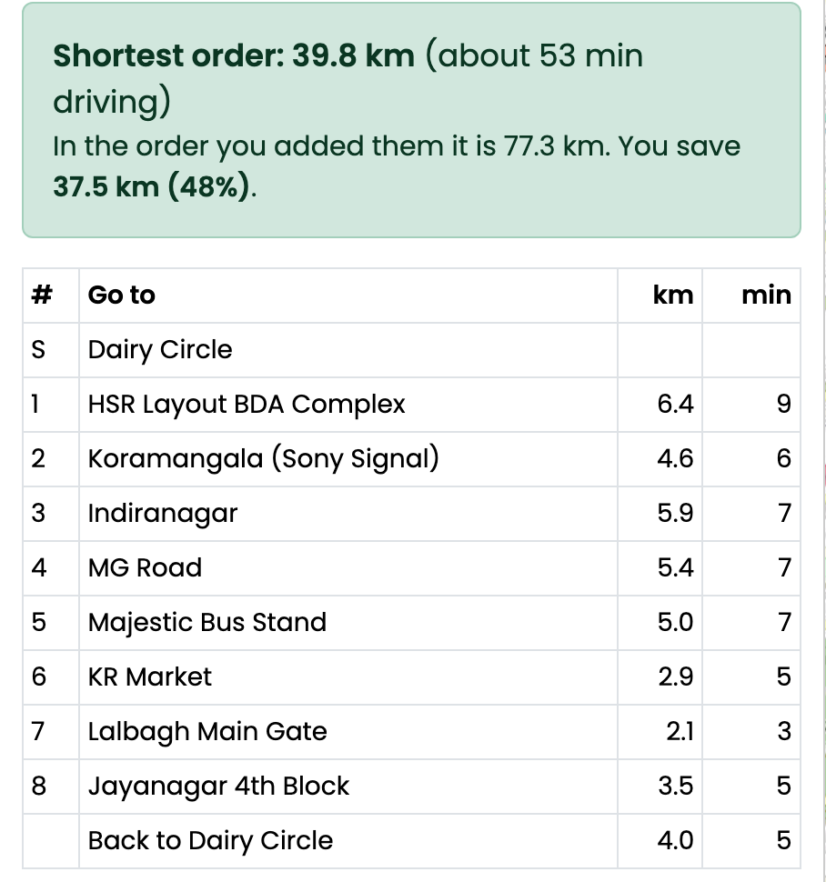

Many people have a list of places to go to in one trip: a delivery boy with 12 parcels, a shop owner dropping orders, a family giving wedding invitations to relatives' houses. Google Maps shows the way from A to B, but you have to decide the order of the stops yourself. A bad order means extra kilometres, petrol and time.
Problem: given a starting place and n stops, find the order to visit every stop once (and come back) so that the total distance is the smallest. This is the well known Travelling Salesman Problem (TSP).


n stops can be visited in n! different orders, so checking all of them stops being possible very quickly.
| Stops | 3 | 5 | 8 | 10 | 15 | 20 |
|---|---|---|---|---|---|---|
| Orders | 6 | 120 | 40,320 | 3.6 million | 1.3 × 1012 | 2.4 × 1018 |
| Input |
• Starting place and the stops (name, latitude, longitude). The user searches a place or clicks on the map. • Round trip or one way. • Distance table D, where D[i][j] = km from place i to place j. Road distances come from OpenStreetMap (OSRM server). Without internet, straight line distance (haversine formula) is used. |
|---|---|
| Output |
• The order to visit the stops. • Total km and driving time, and km for every leg. • Km saved compared to the order the user typed. • Route drawn on the map and a link that opens it in Google Maps. |
It is a web page, so it opens on any phone without installing anything.
What is different from a normal route finder: it compares the order you typed with the best order and tells you how many km you save, and it hands the final order to Google Maps so you can start driving.
Start at home. Always go to the closest place that is not visited yet. It is fast, but it does not look ahead, so the last places are far away and the route often crosses itself.
Pick two links of the route, remove them and join the route the other way (the part in between gets reversed). If the route is shorter now, keep the change. Repeat until no pair of links gives an improvement.
Try every order using recursion, but give up on a half built route as soon as it is already longer than the best complete route found so far (pruning). The 2-opt route is given as the first "best", so most orders are thrown away early.
2-opt removed D-A and C-B (2.24 + 7.81 = 10.05 km) and added D-C and A-B (3.16 + 4.24 = 7.40 km), so the route became 2.64 km shorter. Trying all 5! = 120 orders confirms that 18.73 km is the best possible.
route = [start] // Step 1
while some place is not visited
add the nearest unvisited place to route
repeat // Step 2
for every pair of positions i < j in route
if reversing route[i..j] is shorter, reverse it
until one full pass changes nothing
if stops <= 10 // Step 3
route = tryEveryOrder(bestSoFar = route)
| Method | Best route? | Time | What I found |
|---|---|---|---|
| Try every order (brute force) | Yes | O(n!) | 149 ms at 10 stops. 15 stops would need about 15 hours. |
| Every order + pruning | Yes | O(n!) worst | 9 ms at 10 stops, 154 ms at 12. Too slow after that. |
| Held-Karp (dynamic programming) | Yes | O(n² 2n) | Needs O(n 2n) memory. Not tried. |
| Nearest neighbour only | No | O(n²) | Instant, but about 14% longer than the best. |
| Nearest neighbour + 2-opt (chosen) | Almost | O(n²) a pass | About 1% longer than the best, under 0.001 ms. |
So the planner gives the exact answer when that is cheap (10 stops or fewer) and a near-best answer instantly when it is not. Why not Dijkstra or A*? They find the shortest path between two places. The OSRM server already does that when it gives me the road distance of each pair. They cannot decide the order of the stops.

For these 8 stops there are 40,320 possible orders. With pruning the search had to finish only 102 of them to be sure of the answer.
A web page written in HTML and plain JavaScript with the Leaflet map library.
Files: index.html (planner), js/tsp.js (the algorithms, about 200 lines), tests.html (test cases), benchmark.html (experiments).
18 test cases run in the browser on the same code the planner uses. The first ones have answers I can work out by hand, the others compare with plain brute force.
| Test | Expected | Got | |
|---|---|---|---|
| Only the start, no stops | 0 km | 0 km | Pass |
| One stop 3 km away, round trip | 6.00 km | 6.00 km | Pass |
| Stops on one straight road at km 5, 2, 8, 3 (one way) | order 2, 3, 5, 8 = 8.00 km | 2, 3, 5, 8 = 8.00 km | Pass |
| Same road, round trip | 16.00 km | 16.00 km | Pass |
| Four corners of a 1 km square typed criss-cross (4.83 km) | 4.00 km | 4.00 km | Pass |
| Worked example, nearest neighbour only | 21.37 km | 21.37 km | Pass |
| Worked example, after 2-opt | 18.73 km | 18.73 km | Pass |
| Worked example, all 120 orders tried | 18.73 km | 18.73 km | Pass |
| Pruning must not change the answer (40 random sets of 8 stops) | 40 of 40 same | 40 of 40 same | Pass |
| 2-opt never makes a route longer (200 random sets) | 0 longer | 0 longer | Pass |
| Every place visited exactly once (200 routes, 3 to 80 places) | 200 valid | 200 valid | Pass |
| Two stops at exactly the same spot | valid, 12.00 km | valid, 12.00 km | Pass |
| One way trip never longer than round trip (100 sets) | 100 of 100 | 100 of 100 | Pass |
| One-way street: A to B 2 km, B to A 4 km | averaged to 3 km | 3 km both ways | Pass |
| Bengaluru example against brute force (40,320 orders) | same km | 27.8 = 27.8 km | Pass |
| 10 stops use exact search, 11 stops switch to 2-opt | exact / 2-opt | exact / 2-opt | Pass |
| 300 places still answer quickly | under 1 second | about 1 ms | Pass |
| Part | Time | Extra space |
|---|---|---|
| Distance table | O(n²) | O(n²) |
| Nearest neighbour | O(n²) | O(n) visited list |
| 2-opt | O(n²) per pass, p passes | O(n), a copy of the route |
| Exact search with pruning | O(n!) worst case | O(n) recursion depth |
| Planner, more than 10 stops | O(p · n²) | O(n²) |
n = number of places. In my runs p was only 3 to 6 passes, even for 800 stops.
Random places in a 20 km × 20 km square. Every point is the average of 20 random sets (5 for the last table). Measured in Chrome 154 on a MacBook Air (M4).
| Stops | Nearest neighbour | 2-opt | Passes | 2-opt made it shorter by |
|---|---|---|---|---|
| 100 | 0.014 ms | 0.072 ms | 4.8 | 13.9% |
| 200 | 0.058 ms | 0.280 ms | 4.6 | 13.3% |
| 400 | 0.234 ms | 1.2 ms | 5.0 | 13.5% |
| 800 | 0.935 ms | 5.6 ms | 6.0 | 14.2% |
Driving time is without live traffic. Above 10 stops the route is very good but not guaranteed to be the best. Only one vehicle, and no shop timings. Next I want to add opening times of the places and a second improvement move (or-opt).
References: G. A. Croes, "A method for solving traveling-salesman problems", Operations Research, 1958 (2-opt). Cormen et al., Introduction to Algorithms, section on the travelling-salesman problem. Project OSRM (project-osrm.org). Leaflet (leafletjs.com). OpenStreetMap contributors. Existing tools I looked at: OptiMap (gebweb.net/optimap), tspvis.com.